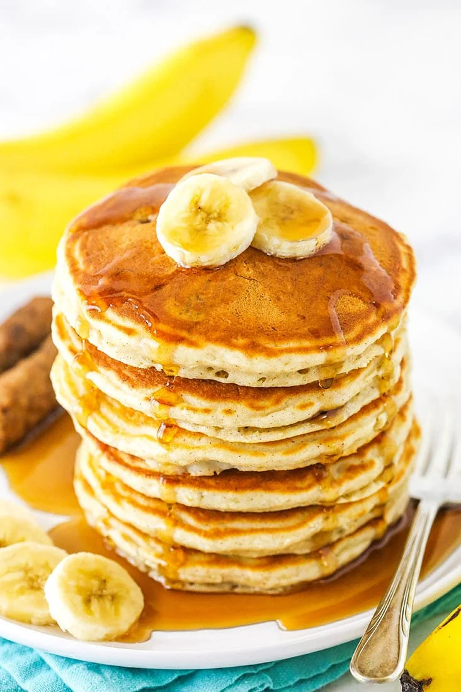

Banana Pancakes
Go back to the home page

Ingredients
- 1 Banana
- 1 Egg
- 1 tbs Flour
- 1/2 tsp baking powder
- 1/2 tsp salt
- About 1 dl Milk
Steps
- Mush the banana into a bowl.
- Add the egg, and whisk it together with the banana.
- Add the flour, baking powder and salt to the batter, and mix until it is smooth.
- Lastly, add milk until the batter is at the wanted thickness.
- Fry the pancakes on medium-high heat until they have a golden brown color.